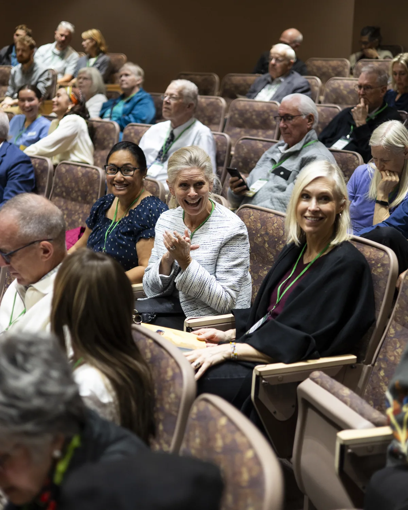

Your speaker is speaking at this conference.
Two days inside the Book of Mormon, with scholars and artists who live in it.
The Book of Mormon Culture Conference brings scholars, painters, filmmakers and writers to Provo for a two-day conference focused purely on celebrating the Book of Mormon. Come and listen to keynotes from Brad Wilcox, Rosalynde F. Welch, and Terryl Givens, plus dozens of other speakers across both days.
$30
$30
per person.
Full registration, both days.
Bradley R. Wilcox
Professor of Ancient Scripture, BYU
Speaking November 6 and 7 in Provo
- When
- November 6 and 7, 2026
- Where
- Provo Marriott on Center
- Registration
- $30 per person
- Format
- Two full days, in person
Who you will hear from


And dozens more scholars, artists and creators across both days.

PhD not required
This conference is meant for people who love the Book of Mormon, not people who know every single thing about it. Come with the Book of Mormon you already know and love.
Two whole days. Just thirty dollars.
A spiritual feast from some of the most unique testimonies.
Bring your friends and family!
Register as a group and get an automatic ten percent off.